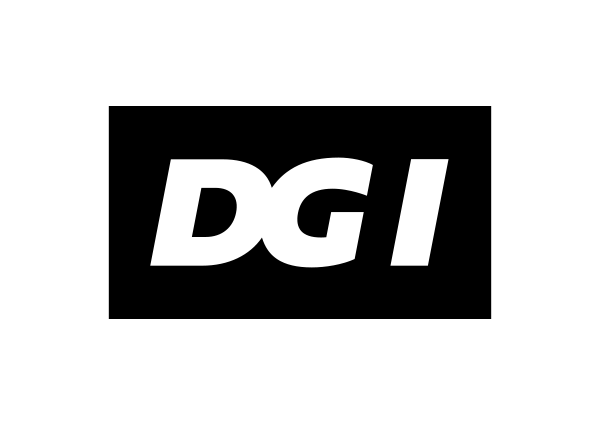
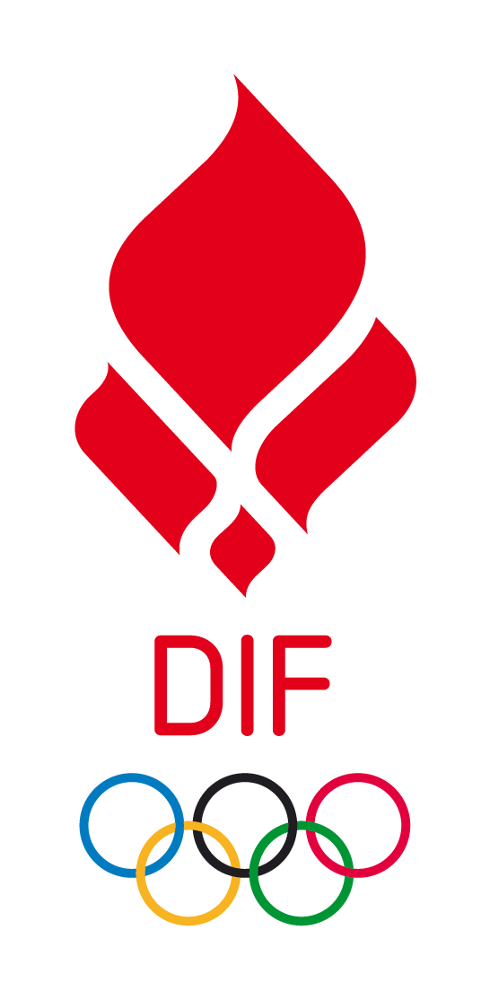
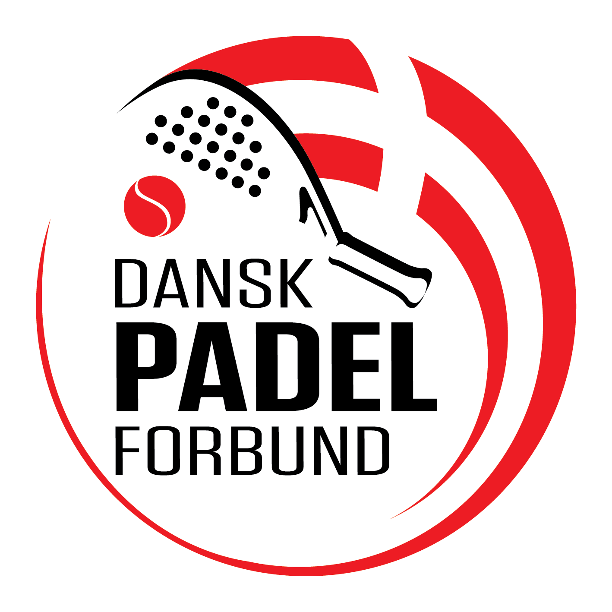
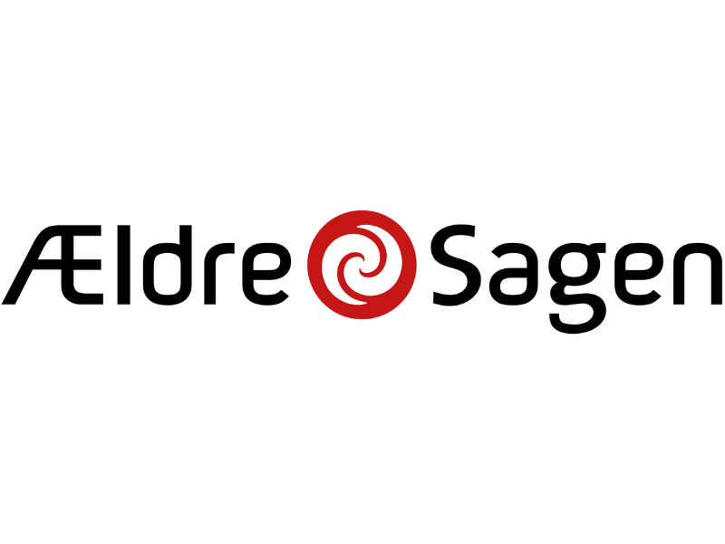

Idrætsorganisationer, ældreorganisationer og lokale foreninger peger på det samme: Sorø har brug for dette projekt.
"Sorø Idræts- & Kulturby er præcis den type projekt, vi gerne ser flere af: foreningsdrevet, båret af frivillige og med plads til alle generationer under samme tag. Når faciliteterne samler i stedet for at opdele, vokser fællesskabet."

"Vores analyse viser, at Sorø ligger i den absolutte bund, når det gælder kommunens idrætsindsats. Et projekt som Sorø Idræts- & Kulturby kan flytte kommunen markant, fordi det både skaber nye faciliteter og nye aktiviteter for grupper, der i dag mangler tilbud."

"Padel er en af Danmarks hurtigst voksende sportsgrene, men væksten er sket mest i kommercielle centre. Når padel forankres i en forening som her, bliver sporten tilgængelig for børn, unge og seniorer, ikke kun for dem der kan betale sig til en banetid."

"Aktive fællesskaber i dagtimerne er noget af det mest effektive mod ensomhed blandt ældre. En idræts- og kulturby med plads til seniorer midt på dagen vil gøre en mærkbar forskel for livskvaliteten i Sorø."

"Frederiksberg bydel vokser hurtigere end resten af kommunen, men faciliteterne er ikke fulgt med. Vi mangler et sted, hvor børnene kan gå hen efter skole, og hvor vi voksne mødes på tværs. Det får vi nu."
"Som forening har vi længe manglet et sted, hvor vores medlemmer kan mødes på tværs af aktiviteter. Idræts- og kulturbyen bliver det naturlige hjem for foreningslivet i bydelen."
Her samler vi presseomtale og nyheder om projektet, efterhånden som de kommer.
Et citat, et logo eller et samarbejde. Al opbakning styrker projektet, og vi vil meget gerne høre fra jer.
Kontakt os